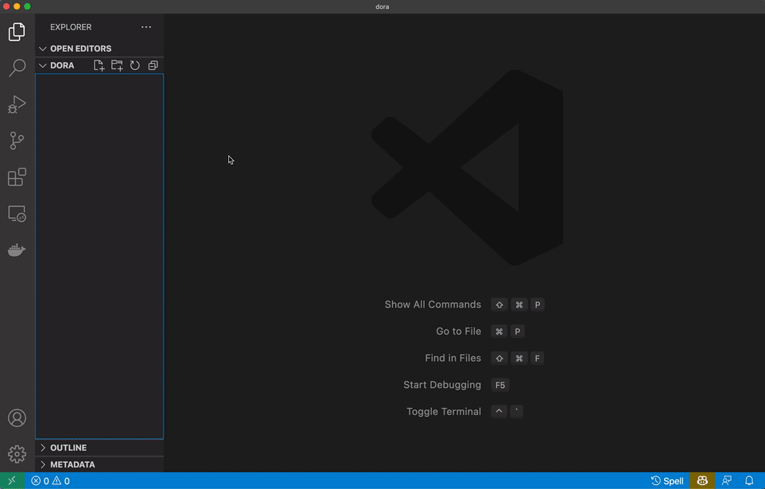
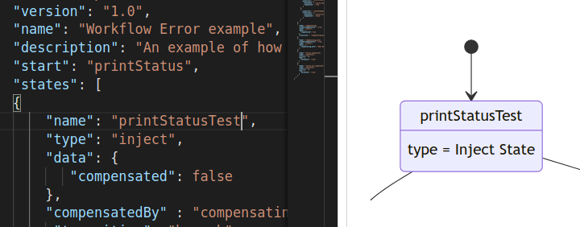
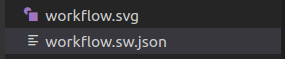
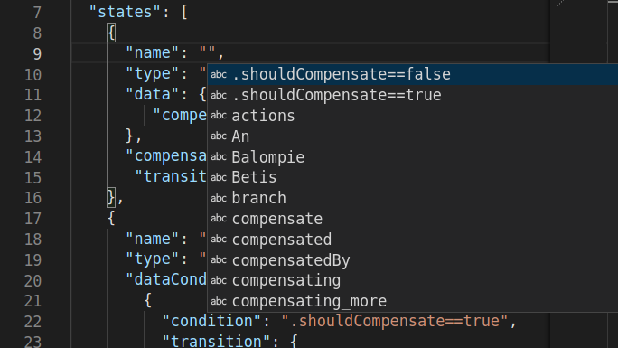

Editing Serverless Workflow definitions with our new VSCode extension
Edit: Some Open Source projects were vital for the development of this extension, and we would like to thank all of them, with highlights to:
CNCF Serverless Workflow SDK Typescript: for workflow parsing;
Mermaid: for workflow rendering and visualization;
Apicurio: for our service catalog integration;
You can also checkout the CNCF Serverless Workflow VSCode extension at VSCode Marketplace.
We are happy to announce the first release of our Serverless Workflow extension, which allows users to have a side-by-side real-time preview of their workflows while editing JSON and YAML files inside VSCode (.sw.json, .sw.yaml, *.sw.yml). This extension complies with the CNCF specification v0.8.

Features included
In this first release we are delivering the following features:
Real-time diagram preview rendering
The diagram on the right side of the editor is updated on each change made, providing the user quick feedback on their modifications. If the workflow is invalid, the preview will have some transparency and be frozen since the last valid state.

Automatic SVG generation
By default, the extension saves an SVG file in the same directory as the workflow file. If you want to change that, you can check the extension configuration options, where you will be able to deactivate it or customize the file name and directory where the file is saved.

Auto-complete suggestions
In this version, the editor provides basic auto-complete suggestions based on the specification and the expressions used in the current file.

Next steps
For the next releases, we are already working on several new features that will improve what the user can do inside the editor:
Service catalog
Users will be able to register Open API endpoints in their environment, allowing the editor to provide augmentation options to make it easy to add new functions to the workflow.
Auto-complete suggestions enhancement
Besides showing suggestions based on the specification and the current file expressions, the user will also be able to add functions and its parameters quickly by selecting suggestions linked to their service catalog.
Validation
Inline detailed validation and integration with the VSCode’s Validation UI, which will provide a detailed list of errors and warnings of the workflow.
That is all for now, the extension is already available at the VSCode store. And stay tuned for our next releases!